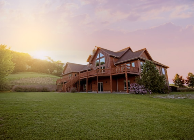
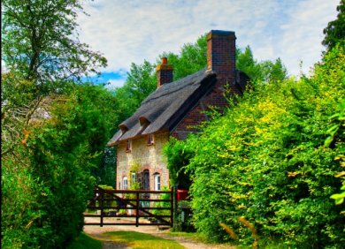
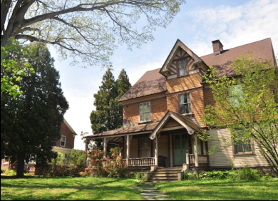

A melhor experiência para seus momentos de lazer está aqui!
Bem-vindos ao Hotel Colina dos Pinheiros, onde a tranquilidade e a natureza se unem para proporcionar uma experiência única e memorável. Aninhado nas encantadoras colinas entre os pinheiros, nosso hotel oferece um refúgio sereno longe da agitação da vida cotidiana. Com acomodações confortáveis e elegantes, rodeadas pela exuberante vegetação, nossos hóspedes têm a oportunidade de relaxar e recarregar as energias. Além disso, nossas instalações de primeira classe, como piscina, spa e restaurante gourmet, garantem que cada momento seja uma celebração do conforto e do prazer. Seja para uma escapada romântica, férias em família ou retiro de negócios, o Hotel Colina dos Pinheiros é o destino perfeito para quem busca uma experiência enriquecedora em um cenário natural deslumbrante. Venha desfrutar da serenidade e hospitalidade que definem a essência do nosso estabelecimento.
O Hotel Colina dos Pinheiros oferece não apenas uma estadia relaxante, mas também uma variedade de atividades emocionantes para os amantes da natureza e aventureiros. Trilhas pitorescas pelos pinheiros permitem que os hóspedes explorem a paisagem envolvente e respirem ar puro. Para os entusiastas do bem-estar, nosso spa oferece tratamentos rejuvenescedores que proporcionam equilíbrio e tranquilidade. Além disso, nosso restaurante combina sabores locais e internacionais, apresentando pratos elaborados com ingredientes frescos da região. A equipe atenciosa do Hotel Colina dos Pinheiros está dedicada a tornar sua estadia memorável em todos os aspectos, oferecendo um ambiente acolhedor e serviços de alta qualidade. Venha descobrir o charme singular do nosso hotel, onde cada momento é uma oportunidade para se conectar com a natureza e criar lembranças duradouras.
Agende sua estadia aqui

Indaíatuba

Piracicabana

Barretos
São Roque
Holambra
Campos do Jordão